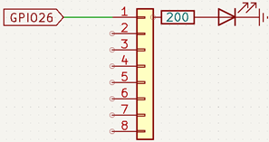
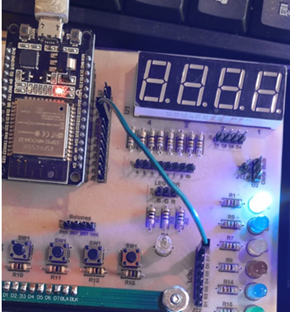

Objetivo. Utilizar la estructura repetitiva while para encender y apagar un LED de manera indefinida. Comprender el concepto de ciclo infinito en MicroPython.
Procedimiento.
-
Conectar un cable desde el pin GPIO26 del microcontrolador al LED verde del entrenador.


- Abrir Thonny e identificar que el microcontrolador esté correctamente conectado.
- Escribir el código mostrado a continuación en un nuevo archivo.
-
Ejecutar el programa y observar el encendido y apagado del LED.
import time from machine import Pin led=Pin(26, Pin.OUT) # Define el pin led as salida while True: led.value(1) # Enciende el LED time.sleep(1.5) led.value(0) # Apaga el LED time.sleep(1.5)
Actividades sugeridas.
- Cambiar el tiempo de espera para acelerar o desacelerar el parpadeo.
- Probar con otro pin GPIO y un LED de diferente color.
- Guardar el programa en la carpeta local del computador.
- Guardar el programa directamente en el microcontrolador y ejecutarlo sin conexión al PC.